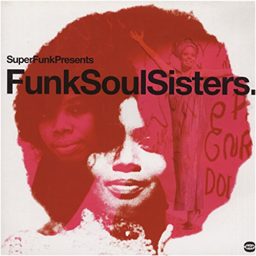

return to the mothers' garden (more funky sounds of female africa 1971-1982africa seven return to the mothers' garden (more funky sounds of female africa 1971-1982africa seven  Vinyl LP pressing. In 2018, we introduced our first Mothers' Garden compilation on International Womens' Day. This compilation looked to shine a light on the often under-acknowledged musical contribution from female African artists. In 2019, we are back with Volume 2 presenting yet again some of Africa's most recognised female artists alongside some lesser known artists. Whilst the roster might have changed slightly, the quality of music is as funky as before and the message stays the same.  complete studio recordingsalice clark complete studio recordingsalice clark Limited vinyl LP pressing. 2016 collection containing all 15 tracks recorded by Alice Clark in her short but fruitful career. Includes the northern soul classic 'You Hit Me (Right Where You Hurt Me)' and the modern soul masterpieces 'Don't You Care' and 'Never Did I Stop Loving You'. This is the first time that all of these tracks have been legally reissued on vinyl, and the first time ever on wax for 'Before Her Time'  les stances à sophieart ensemble of chicago les stances à sophieart ensemble of chicago Art Ensemble Of Chicago - Les Stances A Sophie - LP Vinyl Album  paul's boutique (20th anniversary)beastie boys paul's boutique (20th anniversary)beastie boys 20TH ANNIVERSARY EDITION : On 180-gram vinyl, in a gatefold sleeve. Remastered in 2009. Ambitious 1989 album, produced by The Dust Brothers. Includes "Hey Ladies" and "Shake Your Rump". the in sound from way outbeastie boys Originally released through the Beastie Boys' French fan club, The In Sound From Way Out! is a collection of the group's funky instrumentals from Check Your Head and Ill Communication, with a couple of new tracks thrown in. The Beasties have a flair for loose, gritty funk and soul-jazz, and the stuttering, greasy keyboards of Money Mark give the music an extra edge — he helps make the music sound as authentic as anything from the early '70s. Pressed on 180G vinyl. the funk soul sistersbgp LP Compilation on ACE RECORDS by Various Artists - Funk Soul Sisters 2-LP superfunk, volume 1bgp (2-LP set) with 19 cuts contains rare funk from deep in the crates, featuring songs by Ann Alford, Counts, Houston Outlaws, Pazant Brothers, Motivations, Chuck Bridges, Larry & Tommy, Huck Daniels, Abraham & the Casanovas, Buena Vistas, Dave Hamilton, Little Ann, Robert Lowe & others. (Previously deleted:8/1/06 Original release date:7/13/01) superfunk, volume 3bgp VOL 3. 2LP set Ace Records curated collection of killer rare funk singles plus top quality unreleased gems  superfunk, volume 2bgp superfunk, volume 2bgp (2-LP set) 20 track collection features music from Johnny Otis, Preston Epps, Irene Reid, Billy Garner, Granby Street Development, Pee Wee Crayton, Schiller Street Gang, Thelma Jones, Jackie Harris, Freddy Wilson and others. (Previously deleted:11/1/05. Original release date:8/23/02) |


 Made with Delicious Library
Made with Delicious LibraryNancy, State zipflap congrotus delicious library Thomas, Julien